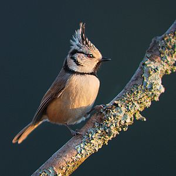
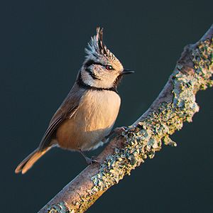

| Crested Tit | |
|---|---|
|  | |
| Conservation status | |
| Binomial name | |
| Lophophanes cristatus (Linnaeus, 1758) |
| Crested Tit | |
|---|---|
|  | |
| Conservation status | |
| Binomial name | |
| Lophophanes cristatus (Linnaeus, 1758) |
The Crested Tit, Lophophanes cristatus (formerly Parus cristatus), is a passerine bird in the tit family Paridae. It is a widespread and common resident breeder in coniferous forests throughout central and northern Europe and in deciduous woodland in France and the Iberian peninsula. In Great Britain, it is chiefly restricted to the ancient pinewoods of Inverness and Strathspey in Scotland, and seldom strays far from its haunts. A few vagrant Crested Tits have been seen in England. It is resident, and most individuals do not migrate.
It is an easy tit to recognise, for besides its erectile crest, the tip of which is often recurved, its gorget and collar are distinctive. It is, like other tits, talkative, and birds keep up a constant zee, zee, zee Birdsong (help·info), similar to that of the Coal Tit .
It makes a nest in a hole in rotting stumps. This bird often feeds low down in trees, but although not shy, it is not always easily approached. It will join winter tit flocks with other species.
Like other tits, it feeds on insects, including caterpillars, seeds.
This species was formerly placed in Parus, but distinctness of Lophophanes is well-supported,[2] and now recognised by the American Ornithologists' Union and the British Ornithologists' Union as a distinct genus.

{kind=link}